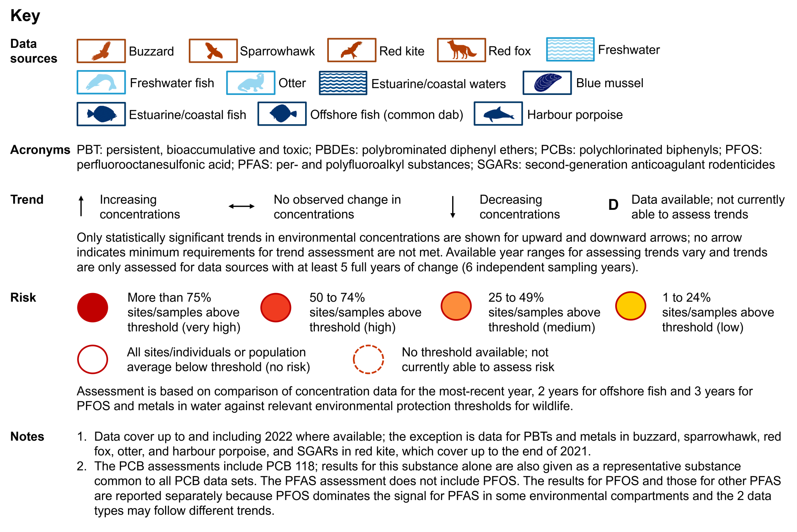
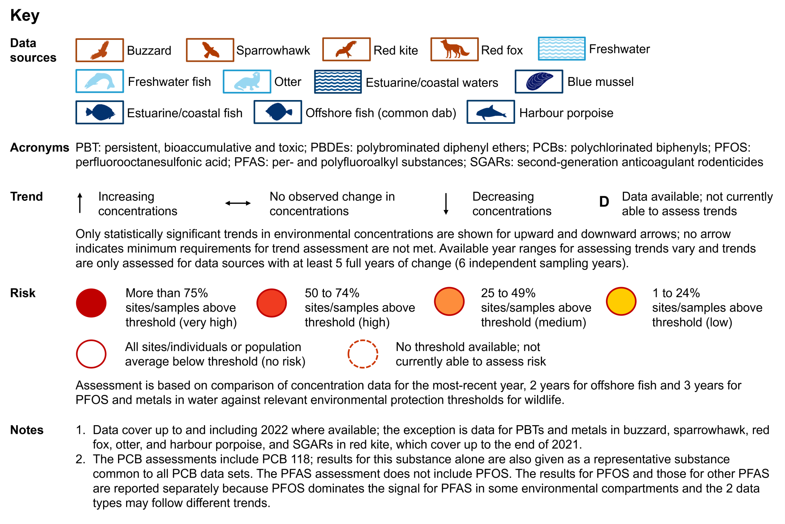

H4: Exposure and adverse effects of chemicals on wildlife in the environment
Short Description
This indicator tracks changes in the exposure of wildlife to chemicals in the environment over time and considers the potential risks to wildlife from chemicals in terrestrial, freshwater and marine ecosystems. Data are currently available for selected chemicals – representative of those highlighted for attention – in surface waters and in certain species of birds of prey, fish, mammals, and mussels. Work is ongoing to improve the exposure metrics and to understand better the effects of chemicals on wildlife populations and individuals.
This indicator is complementary to other indicators within the framework that give data on environmental pressures from chemicals, for example B1: Pollution loads entering waters and H3: Emissions of mercury and persistent organic pollutants to the environment.
Readiness and links to data
The interim indicator presented here reflects that published in 2024, which was a major update of the 2021 version. It covers the exposure of wildlife to chemicals in the environment and, where feasible, the potential risk from different types of chemicals to wildlife on land and in water. The indicator is based on chemical concentrations found in surface waters and in different organisms – common buzzard, sparrowhawk, red kite, red fox, freshwater fish, otter, blue mussel, estuarine and coastal fish, offshore fish (common dab), and harbour porpoise. It covers 3 environmental compartments: terrestrial, freshwater and marine (estuarine, coastal and offshore).
The chemicals are representative of 3 groups highlighted for attention under the 25 Year Environment Plan and its first revision, the Environmental Improvement Plan 2023: (1) persistent, bioaccumulative – the accumulation of a substance over time in a living organism – and toxic (PBT) substances, (2) metals, and (3) pesticides and biocides. There are no new assessments to report in 2025.
We welcome any feedback on these statistics, particularly on their usefulness and value, via 25YEPindicators@defra.gov.uk.
Further details on the data analysis used for the presented indicator are given in the supporting H4 indicator report. Some data relevant to this indicator are also published on the following data platforms:
• British Oceanographic Data Centre - Monitoring and Assessment National Database (MERMAN)
Since the publication of the interim H4 indicator in 2021, the analysis of archived and newly collected samples has enhanced our ability to report exposure trends, addressed data gaps and helped to provide a better picture across environmental compartments. New matrices – buzzards, and estuarine and coastal fish – are included; baseline data for these species are still being established.
We have introduced the polychlorinated biphenyl (PCB) congener 118 and expanded the number of per- and polyfluoroalkyl substances (PFAS) under the indicator. The former is included to show information for a PCB which is common across all of our data sets and which is likely to be present in the environment because of its historical use in commercial mixtures and how it behaves in the environment. Because PFAS are of growing environmental concern, these are now further represented under the indicator despite challenges in reporting what is a broad class of substances. Perfluorooctanesulfonic acid (PFOS), a PFAS, was already included in the indicator as a key known contaminant. We present the results for PFOS separate to those for other PFAS, which are grouped. This is because when PFOS is included under PFAS, it dominates the concentrations observed for the group in some environmental compartments, and PFOS and other PFAS may follow different trends. The PFAS metrics are still under development.
We use readily available data where possible. Legislative drivers for the environmental monitoring that produces such data on chemicals have historically focussed on freshwater and marine environments. We continue to look at the best ways to monitor for chemicals and build a baseline for the terrestrial environment. The terrestrial assessments are, therefore, still under development.
Research and development work is underway to improve the indicator in terms of harmonising our trend assessments, exploring how we assess risk further, and understanding emerging risks and how to capture these. We have initiated the development of metrics for emerging chemical risks. This includes integrating results from the Prioritisation and Early Warning System (PEWS) for chemicals, which considers risks posed by emerging contaminants to surface and groundwaters, biota, soils, and sediments. The approach to emerging risks also aims to consider broader chemical topics, beyond PEWS. As our understanding of these risks develops, work is required to determine the potential for incorporating them into H4 indicator reporting or elsewhere.
We are investigating methods for assessing chemical contaminant effects on wildlife to improve our understanding of environmental impacts and the potential to report these under the indicator.
In addition, the specific monitoring activities that we depend on for these data have undergone challenges in recent years with the amount of available data decreasing. This is due to a range of issues, including pressures on the animals we monitor, the impact of the COVID-19 pandemic, rising costs to deliver the same monitoring, and extreme weather events that have stopped us from being able to do some of the surveys we depend on. Further work is needed to establish the optimal way to collect data to reflect changes in chemical presence in the environment owing to action taken to manage these substances.
Further information on the development of the indicator can be found in the H4 indicator supporting report.
Notes on indicator
The data for each chemical in a particular matrix run to the end of 2022, where possible. The exception is data for PBTs and metals in buzzard, sparrowhawk, red fox, otter, and harbour porpoise, and second-generation anticoagulant rodenticides (SGARs) in red kite, which cover up to the end of 2021.
For the trend assessments, a minimum of at least 5 full years of change within the data (6 independent sampling years) is required for reporting. The corresponding results in the dashboard relate to the full time periods of the available data sets. The length of these varies from the minimum required number of years to data sets that cover 18 sampling years within the period from 2001 to 2022. Not all data sets comprise information for consecutive years.
Where available, thresholds for wildlife have been used to provide context on potential risk through comparison with national concentrations from the most-recent year available (or 2 and 3 years in the case of offshore fish and water concentration data, respectively). These thresholds are given in the supporting report to this indicator. They are not statutory values within the indicator. Their use to indicate potential risk does not represent a compliance assessment. Therefore, the results should not be compared with other regulatory reporting regimes, such as those obtained under the Water Environment (Water Framework Directive) (England and Wales) Regulations 2017, which may use values with different protection goals. The approach for selecting thresholds is specific to the wildlife or environmental matrix being considered because of the data available and the purpose for which it was gathered.
There is some variability across the different data sets in terms of the substances reviewed under the groups polybrominated diphenyl ethers (PBDEs), PCBs and PFAS and in the treatment of results below detection limits.
Monitoring networks, analytical methods and thresholds can change over time. Since reporting the indicator in 2021:
• Monitoring has reduced for water samples taken from freshwater and estuarine and coastal waters, and for freshwater fish and mussels. Notable impacts of this are given in the description of the indicator. Monitoring networks have also changed for water samples with the introduction of the River Surveillance Network (RSN) under the Natural Capital and Ecosystem Assessment Programme (NCEA) which considers broadscale condition of the environment rather than likely impacted locations.
• Coverage of sparrowhawks has decreased with a move toward buzzard data. The transition between these 2 species is under development.
• Investigations are ongoing into sources of red foxes for assessments and how representative they are of the general fox population. Use of these data sources within the indicator is still under development.
• The introduction of PFAS includes datasets within which the numbers of substances analysed have varied over time. Because archived samples are analysed in some cases, this does not necessarily mean an increase in PFAS over the years the samples represent. This is relevant predominantly for offshore fish and harbour porpoise. The PFAS reporting is still under development.
• The freshwater assessment for pesticides is based on a threshold relating to the potential risk of long-term toxic effects. This is a change from the approach used in 2021, which looked at risks from acute exposure, and is now consistent with similar assessments within the indicator.
For some matrices, additional data are available and are provided in the supporting report, but they cannot be incorporated into the dashboard at present. This largely relates to some PBT substances and metals in buzzards, red fox, and estuarine and coastal fish. It also includes PFAS in freshwater, freshwater fish and offshore fish; PFOS data for offshore fish are available too.
The H4 indicator supporting report additionally contains information on spatial variation in the results for freshwater metals monitoring sites and for marine fish.
Indicator components
Table H4: Exposure of wildlife to chemicals in the environment in England and, for some marine components the UK; up to 2022 where available
| Broad pollutant category | Chemical | Blue mussel | Buzzard | Estuarine/coastal fish | Estuarine/coastal waters | Freshwater | Freshwater fish | Harbour porpoise | Offshore fish (common dab) | Otter | Red fox | Red kite | Sparrowhawk |
|---|---|---|---|---|---|---|---|---|---|---|---|---|---|
| Metals | Cadmium | No observed change in concentrations. No threshold available; not currently able to assess risk. Time period: 2011–2022. | No observed change in concentrations. All individuals below threshold for most-recent year. Time period: 2001, 2004, 2006, 2010, 2013, 2016, and 2018–2021. | Data available; not currently able to assess trends. No threshold available; not currently able to assess risk. Time period: 2018–2022. | No observed change in concentrations. All sites below threshold for most-recent 3 years. Time period: 2014–2022. | Decreasing concentrations. 1 to 24% of sites above threshold for most-recent 3 years. Time period: 2014-2022. | No observed change in concentrations. No threshold available; not currently able to assess risk. Time period: 2016–2019, 2021 and 2022. | No observed change in concentrations. No threshold available; not currently able to assess risk. Time period: 2009 and 2011–2021. | Increasing concentrations. No threshold available; not currently able to assess risk. Time period: 2008–2022. | No observed change in concentrations. No threshold available; not currently able to assess risk. Time period: 2014–2021. | Data available; not currently able to assess trends. No threshold available; not currently able to assess risk. Time period: 2018–2021. | - | No observed change in concentrations. All individuals below threshold for most-recent year. Time period: 2007–2014, 2020 and 2021. |
| Metals | Copper | Decreasing concentrations. No threshold available; not currently able to assess risk. Time period: 2011–2022. | - | Data available; not currently able to assess trends. No threshold available; not currently able to assess risk. Time period: 2018–2022. | No observed change in concentrations. All sites below threshold for most-recent 3 years. Time period: 2014–2022. | No observed change in concentrations. 1 to 24% of sites above threshold for most-recent 3 years. Time period: 2014-2022. | - | - | No observed change in concentrations. No threshold available; not currently able to assess risk. Time period: 2008–2022. | - | - | - | - |
| Metals | Lead | Decreasing concentrations. No threshold available; not currently able to assess risk. Time period: 2011–2022. | Increasing concentrations. 1 to 24% of samples above threshold for most-recent year. Time period: 2001, 2004–2006, 2010, 2013, 2016, and 2018–2021. | Data available; not currently able to assess trends. No threshold available; not currently able to assess risk. Time period: 2018–2022. | No observed change in concentrations. 1 to 24% of sites above threshold for most-recent 3 years. Time period: 2014–2022. | Decreasing concentrations. 1 to 24% of sites above threshold for most-recent 3 years. Time period: 2014-2022. | Increasing concentrations. No threshold available; not currently able to assess risk. Time period: 2016–2019, 2021 and 2022. | Increasing concentrations. No threshold available; not currently able to assess risk. Time period: 2009 and 2011–2021. | Increasing concentrations. No threshold available; not currently able to assess risk. Time period: 2008–2022. | Decreasing concentrations. No threshold available; not currently able to assess risk. Time period: 2014–2021. | Data available; not currently able to assess trends. No threshold available; not currently able to assess risk. Time period: 2018–2021. | - | No observed change in concentrations. All individuals below threshold for most-recent year. Time period: 2007–2014, 2020 and 2021. |
| Metals | Nickel | No observed change in concentrations. No threshold available; not currently able to assess risk. Time period: 2011–2022. | No observed change in concentrations. No threshold available; not currently able to assess risk. Time period: 2001, 2004–2006, 2010, 2013, 2016, and 2018–2021. | Data available; not currently able to assess trends. No threshold available; not currently able to assess risk. Time period: 2018–2022. | No observed change in concentrations. All sites below threshold for most-recent 3 years. Time period: 2014–2022. | Decreasing concentrations. 1 to 24% of sites above threshold for most-recent 3 years. Time period: 2014-2022. | - | No observed change in concentrations. No threshold available; not currently able to assess risk. Time period: 2009 and 2011–2021. | No observed change in concentrations. No threshold available; not currently able to assess risk. Time period: 2008–2022. | No observed change in concentrations. No threshold available; not currently able to assess risk. Time period: 2014–2021. | Data available; not currently able to assess trends. No threshold available; not currently able to assess risk. Time period: 2018–2021. | - | Data available; not currently able to assess trends. No threshold available; not currently able to assess risk. Time period: 2007–2014, 2020 and 2021. |
| Metals | Zinc | Increasing concentrations. No threshold available; not currently able to assess risk. Time period: 2011–2022. | - | Data available; not currently able to assess trends. No threshold available; not currently able to assess risk. Time period: 2018–2022. | No observed change in concentrations. 50 to 74% of sites above threshold for most-recent 3 years. Time period: 2014–2022. | Decreasing concentrations. 25 to 49% of sites above threshold for most-recent 3 years. Time period: 2014-2022. | - | - | No observed change in concentrations. No threshold available; not currently able to assess risk. Time period: 2008–2022. | - | - | - | - |
| PBT substances | Mercury | Increasing concentrations. More than 75% of sites above threshold for most-recent year. Time period: 2011–2019, 2021, and 2022. | No observed change in concentrations. Population average below threshold for most-recent year. Time period: 2001, 2004, 2006, 2010, 2013, 2016, and 2018–2021. | Data available; not currently able to assess trends. More than 75% of sites above threshold for most-recent year. Time period: 2018–2022. | - | - | No observed change in concentrations. More than 75% of sites above threshold for most-recent year. Time period: 2014–2019 and 2022. | No observed change in concentrations. No threshold available; not currently able to assess risk. Time period: 2009 and 2011–2021. | No observed change in concentrations. More than 75% of samples above threshold for most-recent 2 years. Time period: 2008–2022. | No observed change in concentrations. Population average below threshold for most-recent year. Time period: 2014–2021. | Data available; not currently able to assess trends. No threshold available; not currently able to assess risk. Time period: 2018–2021. | - | No observed change in concentrations. Population average below threshold for most-recent year. Time period: 2000, 2005, 2006, 2011–2013, 2020, and 2021 (2021 for risk assessment only). |
| PBT substances | PBDEs | Decreasing concentrations. All sites below threshold for most-recent year. Time period: 2015–2022. | Data available; not currently able to assess trends. No threshold available; not currently able to assess risk. Time period: 2018, 2019 and 2021. | Data available; not currently able to assess trends. All sites below threshold for most-recent year. Time period: 2017–2022. | - | - | Decreasing concentrations. All sites below threshold for most-recent year. Time period: 2015–2019, 2021 and 2022. | Decreasing concentrations. All individuals below threshold for most-recent year. Time period: 2004–2008 and 2010–2021. | Decreasing concentrations. 1 to 24% of samples above threshold for most-recent 2 years. Time period: 2008–2022. | Decreasing concentrations. No threshold available; not currently able to assess risk. Time period: 2015–2021. | - | - | - |
| PBT substances | PCB 118 | No observed change in concentrations. 25 to 49% of sites above threshold for most-recent year. Time period: 2011–2022. | Data available; not currently able to assess trends. No threshold available; not currently able to assess risk. Time period: 2018, 2019 and 2021. | Data available; not currently able to assess trends. More than 75% of sites above threshold for most-recent year. Time period: 2018–2022. | - | - | Decreasing concentrations. No threshold available; not currently able to assess risk. Time period: 2015–2019 and 2022. | Increasing concentrations. No threshold available; not currently able to assess risk. Time period: 2004–2021. | No observed change in concentrations. More than 75% of samples above threshold for most-recent 2 years. Time period: 2008–2022. | No observed change in concentrations. No threshold available; not currently able to assess risk. Time period: 2015–2021. | - | - | - |
| PBT substances | PCBs | No observed change in concentrations. 25 to 49% of sites above threshold for most-recent year. Time period: 2011–2022. | Data available; not currently able to assess trends. No threshold available; not currently able to assess risk. Time period: 2018, 2019 and 2021. | Data available; not currently able to assess trends. More than 75% of sites above threshold for most-recent year. Time period: 2018–2022. | - | - | No observed change in concentrations. No threshold available; not currently able to assess risk. Time period: 2015–2019 and 2022. | No observed change in concentrations. 25 to 49% of samples above threshold for most-recent year. Time period: 2004–2021. | No observed change in concentrations. More than 75% of samples above threshold for most-recent 2 years. Time period: 2008–2022. | No observed change in concentrations. No threshold available; not currently able to assess risk. Time period: 2015–2021. | - | - | - |
| PBT substances | PFAS | - | Data available; not currently able to assess trends. No threshold available; not currently able to assess risk. Time period: 2018, 2019 and 2021. | - | - | Data available; not currently able to assess trends. No threshold available; not currently able to assess risk. Time period: 2016–2022. | Data available; not currently able to assess trends. No threshold available; not currently able to assess risk. Time period: 2022. | No observed change in concentrations. No threshold available; not currently able to assess risk. Time period: 2009 and 2012–2021. | Data available; not currently able to assess trends. No threshold available; not currently able to assess risk. Time period: 2014–2022. | No observed change in concentrations. No threshold available; not currently able to assess risk. Time period: 2015–2021. | Data available; not currently able to assess trends. No threshold available; not currently able to assess risk. Time period: 2018–2021. | - | - |
| PBT substances | PFOS | - | Data available; not currently able to assess trends. No threshold available; not currently able to assess risk. Time period: 2018, 2019 and 2021. | Data available; not currently able to assess trends. All sites below threshold for most-recent year. Time period: 2017–2022. | - | Decreasing concentrations. 1 to 24% of sites above threshold for most-recent 3 years. Time period: 2016–2022. | Decreasing concentrations. All sites below threshold for most-recent year. Time period: 2015–2019, 2021 and 2022. | Decreasing concentrations. All individuals below threshold for most-recent year. Time period: 2001–2003, 2009 and 2012–2021. | Data available; not currently able to assess trends. All samples below threshold for most-recent 2 years. Time period: 2014–2022. | No observed change in concentrations. No threshold available; not currently able to assess risk. Time period: 2015–2021. | Data available; not currently able to assess trends. No threshold available; not currently able to assess risk. Time period: 2018–2021. | - | - |
| Pesticides and biocides | Pesticides | - | - | - | - | No observed change in concentrations. More than 75% of sites above threshold for most-recent year. Time period: 2016-2022. | - | - | - | - | - | - | - |
| Pesticides and biocides | SGARs | - | - | - | - | - | - | - | - | - | Increasing concentrations. No threshold available; not currently able to assess risk. Time period: 2015-2022. | No observed changes in concentrations. 1 to 24% of samples above threshold for most-recent year. Time period: 2015-2021. | - |
Images H4: Exposure of wildlife to chemicals in the environment in England and, for some marine components the UK; up to 2022 where available
 

Trend description for H4
i) Persistent, bioaccumulative and toxic substances:
For PBT substances, downward trends for PBDEs and PFOS are observed in freshwater and marine wildlife, except for PFOS in otters which shows no trend. The downward trend for PBDEs in mussels has lower certainty. Downward trends are also seen for PFOS in freshwater. No trends are observed for PCBs as a group; however, for the congener PCB 118, levels are decreasing in freshwater fish, but upward trends are seen in harbour porpoise. An upward trend is also seen for mercury in mussels, though this may be influenced by recent reductions in monitored sites. It should be noted that the results for PBTs in offshore fish (common dab) and harbour porpoise in the interim indicator are generally based on well-established data sets covering long periods (greater than 10 sampling years). Within those data sets, PBDEs and PCBs in offshore fish and PBDEs and PFOS in harbour porpoise show levelling off or increasing concentrations in more-recent years.
The percentage of sites or samples exceeding thresholds is very high for mercury in the freshwater and marine environments, although this is either not observed or not known for top predators in all compartments. The result for mercury in offshore fish (common dab), however, is based on a threshold that could be considered over-precautionary for reasons given in the supporting report. Medium to very high potential risk is presented by PCBs; thresholds were only available for the marine environment for this assessment. Low potential risk is observed for PBDEs and PFOS in offshore fish and freshwater, respectively.
ii) Metals:
For metals, the trends over time are varied. Downward trends are observed for lead, cadmium, nickel, and zinc in freshwater, for lead in otters, and for lead and copper in mussels, though the result for copper in mussels has lower certainty. Lead also presents the majority of upward trends, which are seen in buzzards, freshwater fish, offshore fish (common dab), and harbour porpoise. Cadmium and zinc also have upward trends in offshore fish and mussels, respectively. Further investigation and increased monitoring may help provide a better understanding of the trends seen. The results for metals in offshore fish and harbour porpoise in the interim indicator are based on well-established data sets covering long periods (greater than 10 sampling years). Within those data sets, data for more-recent years for all metals in offshore fish, and for lead and nickel in harbour porpoise, suggest the need to review the situation over time as upward trends are observed.
The lack of thresholds relevant to many of the matrices covered in the indicator means it is often not possible to assess the potential risks that metals pose to wildlife. Recent levels of lead in buzzards and estuarine and coastal waters, and freshwater concentrations for lead, cadmium, nickel, and copper, show some but low potential risk. A medium to high percentage of freshwater and estuarine and coastal water sites exceed thresholds for zinc. However, there has been more bias towards freshwater sampling sites affected by abandoned metal mines in recent years in the freshwater monitoring, and the number of sites assessed for metals in estuarine and coastal waters is substantially lower compared with previous reporting.
The freshwater sites from which water samples are taken can be split into 2 types: those located in waters polluted by metals from abandoned metal mines – as mentioned above – and those in other locations. Over the period from 2014 to 2022 for waters affected by abandoned metal mines, all metals show upward trends. For the same period in other waters not affected by abandoned metal mines, metal concentrations show overall downward trends. For waters affected by abandoned metal mines, their elevated levels of metals mean that they comprise a high proportion of those sites which exceed available thresholds; very few ‘other’ sites are above the corresponding thresholds.
iii) Pesticides and biocides:
Pesticides in freshwater and the biocidal SGARs in red kites show no statistically significant changes in concentrations over time. For SGARs in red foxes, a statistically significant upward trend is seen, although data for some years are few, increasing the uncertainty.
Percentage threshold exceedance suggests very high potential risk for pesticides in freshwater. Some of these substances may have environmental presence because of sources other than their use as plant protection products, for example imidacloprid is now primarily used as a veterinary medicine. Potential risk is indicated for less than a quarter of individuals considered for assessing SGARs in red kites. In this case only, the risk is assessed using an approach which includes looking at related SGAR effects observed in the birds, as opposed to solely assessing exceedances of threshold concentrations. Therefore, the trend in potential risk does not necessarily match that relating to concentration levels over time. Indeed, a statistically significant decrease in potential risk is observed in contrast to the steady levels of SGAR concentrations seen in these birds.
Assessment of change
No assessment of change was undertaken for this indicator as a suitable time series is not yet available in the Outcome Indicator Framework.